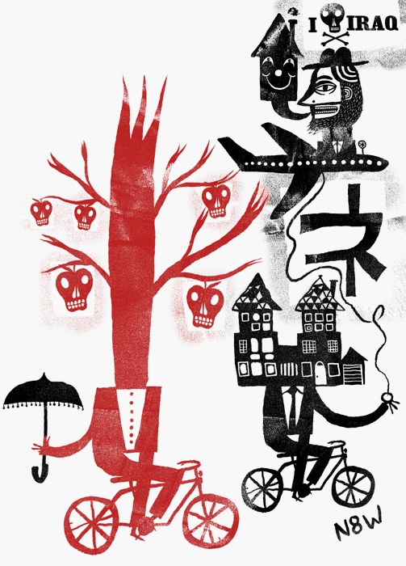
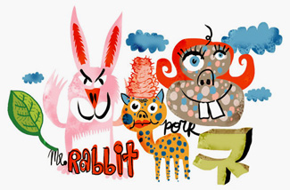
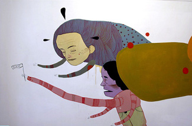
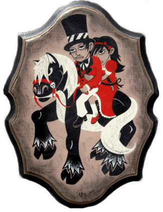
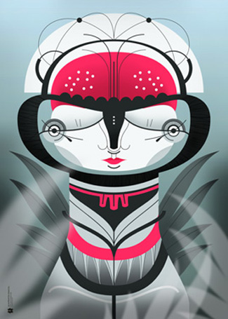
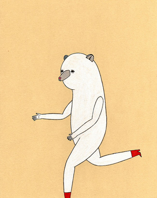
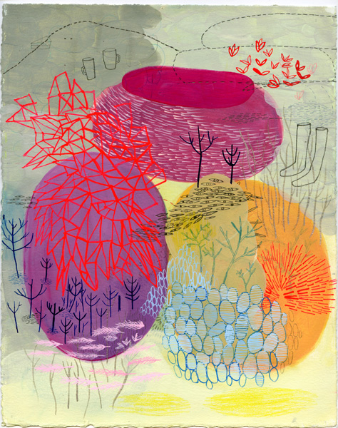
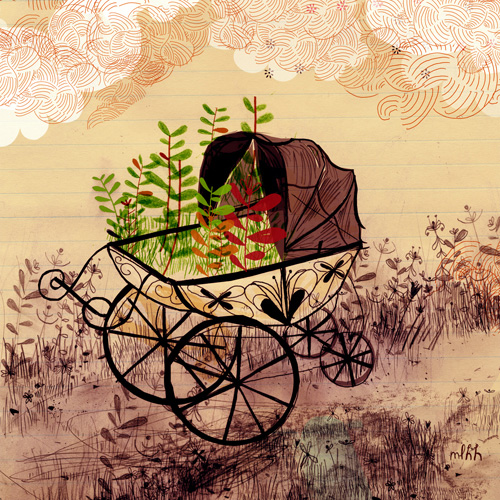

О ПОЛЬЗЕ ОГРАНИЧЕНИЙ
Специальный гость (от Ирины Троицкой)
О ПОЛЬЗЕ ОГРАНИЧЕНИЙ От Ирины Троицкой
Друзья, с позволения редакции я вам представляю рубрику "Special guest star", которая будет обновляться по мере того, как кому-то из моих коллег найдется что сказать. Сегодня в эфире Ира Троицкая, встречайте.
Годами отработанный способ рисования чего бы то ни было, три, ну, хорошо, пять цветов, ставших почти что фирменными, шаг вправо, шаг влево считаются побегом. Примерно так выглядит состоявшийся западный иллюстратор, если не вдаваться в подробности. Сначала я считала это занудством, потом - нежеланием делать что-то новое, теперь понимаю - это совершенно нормальное явление. Более того, я начала относиться к таким жестко очерченным стилистическим рамкам положительно. Тут опять придется привести в пример Нейта Вильямса (не будем нарушать традицию).

Хотя, в общем и целом, я тоже против единообразия. Велик риск надоесть зрителю, примелькаться арт-директорам, да, в конце-концов, устать от самого себя.
Вот и Вильямс, чтобы иметь возможность рисовать по-другому, создал себе клона. Назвал его Александром Блю, завел ему сайт, и зарегистрировал отдельный почтовый ящик. Есть подозрение, что и номер счета у этого виртуального персонажа тоже свой, отдельный. То есть официально это совершенно другой человек. Потому что рисовать в двух стилях по западным представлениям - нехорошо. Но надо же как-то выкручиваться!

Ход с клонированием - достаточно распространенная практика среди западных иллюстраторов. Строго у них там с творчеством. Возможно, поэтому они даже материалы меняют неохотно. По тамошним представлениям, если масло на акварель сменилось, то это уже, считай, новый стиль. Хотя и формы, и линии, и цвета при этом почти всегда остаются те же.

Можно сказать, что нам с вами повезло. У нас единство стиля, вроде бы, стараются блюсти, но не так строго. Поэтому, если завтра вдруг захочется рисовать "задом наперед, совсем наоборот", никто и слова поперек не скажет. Другое дело, что на чужом поле придется играть по чужим правилам. Которые, по понятным причинам, не сразу становятся ясны. И, вместо того, чтобы, играючи, на одном дыхании выдать заказчику очередную картинку, приходится долго выяснять, а что там "задом наперед" и как именно "совсем наоборот".

Законы, казалось бы, везде одинаковые - цвет, композиция и так далее, - но следовать им в условиях постоянно меняющейся стилистики не так-то просто. То есть, конечно, многое зависит от уровня мастерства. Но вкусные мелочи, которые как раз и делают иллюстрацию законченной, обнаружить с наскока невозможно.

Со стороны может показаться скучным все время делать одно и то же. Но это только до тех пор, пока не почувствуешь, что вот такие ноги и уши ты теперь можешь нарисовать в любых условиях - в темноте, за спиной, да хоть вверх ногами. И как раз в этот момент появляется возможность полностью переключиться на работу с тем, что во время стилистических поисков задвигается обычно на второй план.



Грубо говоря, пока мы с вами рассуждаем, что выбрать, компьютер или карандаш и как изобразить, реалистично или не очень, и что там нам сегодня хочется и какая пятка зачесалась, наши западные собратья все это время посвящают композиции и, собственно, сюжету. И выигрывают. Потому что знают, какой шарик, в какую лузу и как именно бить. Им остается лишь одно - ударить. А это гораздо проще, чем пытаться каждый раз удержать в голове весь процесс.